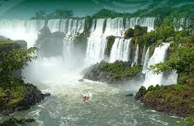
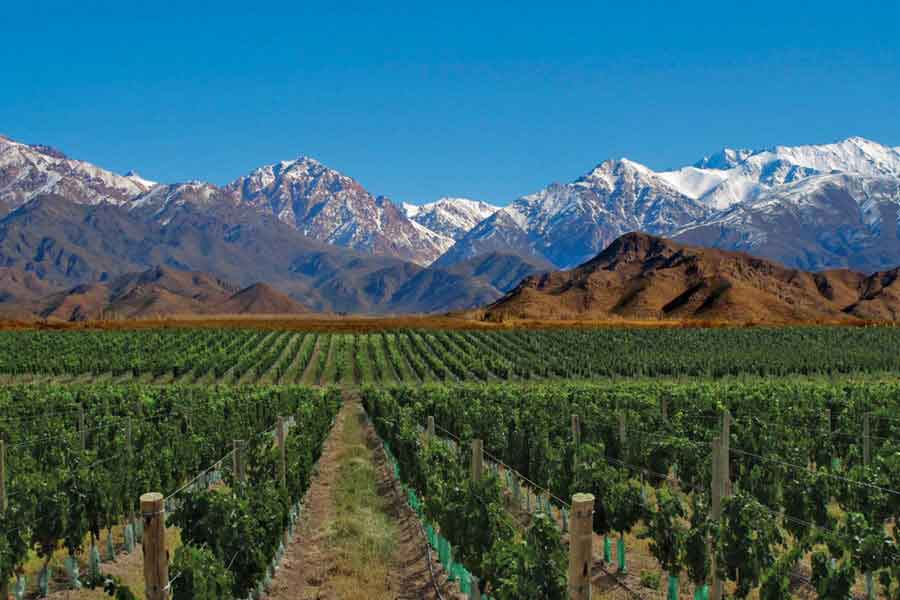

Destinos
Patagonia

Disfruta de los paisajes mas bellos del país, con lagos, montañas, glaciares y mucho mas! Destinos activos durante todo el año, para disfrutar con amigos, familia y en pareja, no te lo pierdas!
Litoral
La región del Litoral abarca a seis provincias del noreste argentino, las que atesoran lugares que impactan por su fascinante belleza natural y son un gran atractivo turístico internacional. Pero también, muchos de ellos son de suma importancia para el planeta y el desarrollo en equilibrio del ecosistema.
Cuyo
Esta región ofrece una variedad de paisajes que van cambiando de colores según la estación del año que sea. De todos modos, la mejor época para visitar la región de Cuyo es en verano (noviembre a febrero). Lo bueno del invierno es que se puede disfrutar de los deportes en la nieve.
Norte

Esta región de Argentina la integran seis provincias ubicadas en el noroeste del territorio: Jujuy, Salta, La Rioja, Catamarca, Santiago del Estero y Tucumán. Es ante todo, una geografía de notables contrastes, extraordinaria belleza paisajística y riqueza cultural. La aridez de la Puna; la exuberante selva de las Yungas; planicies santiagueñas casi a nivel del mar, y los más de 6.800 metros de la Cordillera de los Andes. Allí donde la tierra muestra sus capas geológicas en Talpampaya, poniendo al descubierto secreteos milenarios, y donde cada paisaje norteño enmarca antiguas ruinas, fortalezas del período incaico, capillas coloniales, catedrales y basílicas.
Córdoba

La Provincia de Córdoba es un destino ideal para experimentar las más diversas sensaciones que a un viajero le puedan provocar placer. Con una indeleble impronta cultural e histórica, nuestro territorio combina tradición, modernidad y una excepcional riqueza paisajística. Por la variedad de destinos que propone su geografía, es un lugar donde el turista podrá disfrutar todo el año propuestas siempre novedosas.
Buenos Aires

Buenos Aires es una ciudad que sorprende y que seguro gustará a quienes busquen cultura, tradición e historia, como también vida nocturna, o una gastronomía de excelencia. Las atracciones turísticas de Buenos Aires son muy variadas. Camina de noche por la Avenida Corrientes y siente la vibración que genera esa enorme avenida iluminada, con sus teatros, librerías, cines y restaurantes.